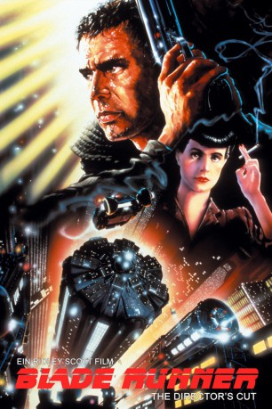
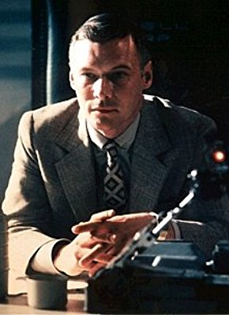

#1667 Blade Runner
Auszeichnungen: für 2 Oscars nominiert 3 BAFTA-Awards gewonnen
 
 IMDB-Wertung: 8.2 / 10
IMDB-Wertung: 8.2 / 10  IMDB-TOP-Platzierung: 156
IMDB-TOP-Platzierung: 156  Metascore: 89
Metascore: 89 
Man schreibt das Jahr 2019. Den Replikanten, künstlichen Menschen, ist bei Todesstrafe die Rückkehr zur Erde verboten. Doch trotzdem kehren eines Tages einige dieser Wesen zurück. Diese besondere Spezies verfügt über Kraft und Intelligenz mehrerer Menschen und ist von diesen kaum zu unterscheiden. Sie sollen unschädlich gemacht werden. Nur eine Spezialeinheit kann sie aufspüren: die Blade Runner. Eine atemberaubende Hetzjagd durch die futuristische Welt beginnt.
Jahr: 1982
Dauer: 117 Minuten
FSK: 12
Land: USA Studio: Warner Bros.Tonspuren: DD5.1 - ,
Untertitel:
Auflösung: 1080p (1920x800) Größe: 10240 MB
Genre: Thriller, Sci-Fi
Regisseur:  Ridley Scott
Ridley Scott
Drehbuch: Hampton Fancher, David Webb Peoples, Philip K. Dick
Soundtrack: Vangelis
Darsteller:
 Harrison Ford als Rick Deckard
Harrison Ford als Rick Deckard Rutger Hauer als Roy Batty
Rutger Hauer als Roy Batty Sean Young als Rachael
Sean Young als Rachael Edward James Olmos als Gaff
Edward James Olmos als Gaff M. Emmet Walsh als Bryant
M. Emmet Walsh als Bryant Daryl Hannah als Pris
Daryl Hannah als Pris William Sanderson als J.F. Sebastian
William Sanderson als J.F. Sebastian Brion James als Leon Kowalski
Brion James als Leon Kowalski Joe Turkel als Dr. Eldon Tyrell
Joe Turkel als Dr. Eldon Tyrell Joanna Cassidy als Zhora
Joanna Cassidy als Zhora James Hong als Hannibal Chew
James Hong als Hannibal Chew-  Morgan Paull als Holden
- Dawna Lee Heising als Showgirl , uncredited
- Alexis Rhee als Geisha #1 , uncredited
 Kevin Thompson als Bear
Kevin Thompson als Bear- John Edward Allen als Kaiser
- Hy Pyke als Taffey Lewis
- Kimiko Hiroshige als Cambodian Lady
- Bob Okazaki als Howie Lee
- Carolyn DeMirjian als Saleslady
- Ben Astar als Abdul Ben Hassan , uncredited
- Judith Burnett als Ming-Fa , uncredited
- Leo Gorcey Jr. als Louie - Bartender , uncredited
- Sharon Hesky als Bar Patron , uncredited
- Kelly Hine als Showgirl , uncredited
- Tom Hutchinson als Bartender , uncredited
- Charles Knapp als Bartender , uncredited
- Rose Mascari als Bar Patron , uncredited
- Jirô Okazaki als Policeman , uncredited
- Steve Pope als Policeman , uncredited
- Robert Reiter als Policeman , uncredited
Datei: X:\2-Dilogie(A-F)\Blade Runner\Blade Runner (1982, FSK12, 1920x800).mkv seit 04.08.2015
Festplatte: HD Collection-2(A-Z)-3(A-M)
 Alle Filme aus Gruppe '2-Dilogie(A-F)\Blade Runner'
Alle Filme aus Gruppe '2-Dilogie(A-F)\Blade Runner'